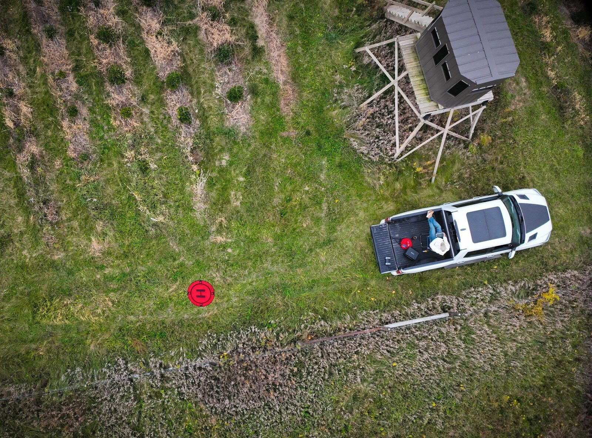
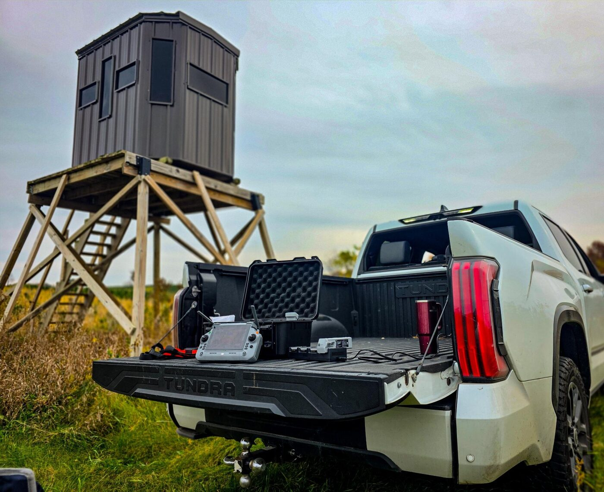
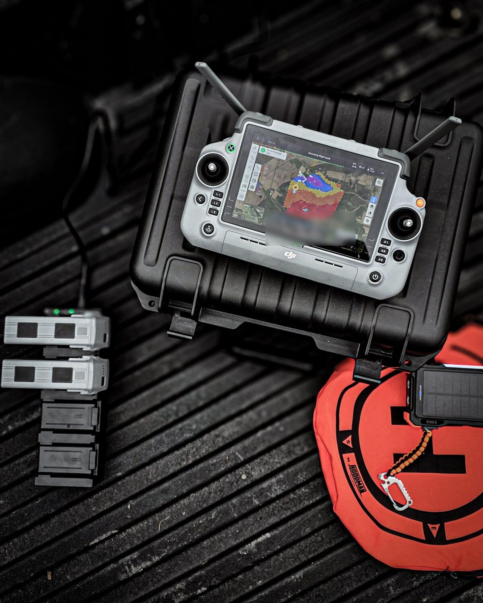

field notes ·
110.5 acres, two operations, one day of mapping
This property runs as both a Christmas tree farm and an agritourism destination, so the flying was split into a mission for each side of the business. Images were shot straight down and at angles so the finished model can be measured, not just looked at.

- Area110.5 acresmapped in one day
- Images9,578100% RTK fix
- Resolution2.4 cm/pxorthomosaic
- Flights835+ miles, 2.5+ hours
Why fly it at two angles
Straight-down images make a clean, true-to-scale map, but they see mostly the tops of things. Angled images add the sides of trees, buildings, and slopes, which gives the 3D reconstruction more to work with. Flying both is what turns a picture of a property into a model that can be measured.
Every one of the 9,578 mapping images carries an RTK fix, so each photo is tied to a corrected position rather than the drone's standard GPS.
What can a dataset like this produce?
- High-resolution orthomosaicsOne seamless, true-to-scale map of the entire property, detailed enough to see individual trees.
- Measurable 3D modelsTree heights, slopes, and distances, pulled straight from the screen.
- Elevation data and contour mapsThe lay of the land, for planning drainage, new plantings, and visitor traffic.
- Volume measurementsStockpiles, earthwork, and fill, calculated without a tape measure.
One pilot, one truck, one day in the field


Mapping products are produced from drone photography for visualization and measurement. They are not a land survey and do not establish property boundaries.